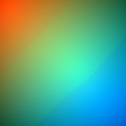

Exposer is the representation learning data structure, based on interpretation of uncorrect histogram and scatter-plot.
To create an exposer, all you need is to load a dataset, prepare dictionary with demanded configuration and use them to initiate object.
dataset = Dataset('data/iris.csv','iris')
configuration = {
'radius': .5,
'grain': 15,
'exposerParticipation': ExposerParticipation.lone,
'chosenLambda': [2, 3]
}
exposer = Exposer(dataset, configuration)
For a process of classification, first is it required to clear supports for all samples in dataset. Later you can use exposer to create predictions. Dictionary with scores is provided by a function score() being a member of dataset object.
dataset.clearSupports()
exposer.predict()
scores = dataset.score()
from Dataset import *
from enum import Enum
import numpy as np
import math
import operator
import png
import functools
import colorsysExposers are dedicated to work in classifier ensembles. To establish possible participations in voting, there is an enum with three possible setups:
lone - each exposer will have the same influence on voting,theta1 - we use single measure for every exposer influence,theta2 - there is a measure for every class support coming from each exposer.class ExposerParticipation(Enum):
lone = 1
theta1 = 2
theta2 = 3class Exposer(object): def __init__(self, dataset, configuration):First, we're collecting four values from passed configuration:
self.exposerParticipation = configuration['exposerParticipation']
self.grain = configuration['grain']
self.radius = configuration['radius']
self.chosenLambda = configuration['chosenLambda']Later, we're gathering the dataset and calculating number of data structure dimensions, from a number of features of chosenLambda.
self.dataset = dataset
self.dimensions = len(self.chosenLambda)It gives us enough information to create an empty matrix which will store all the information in our exposer. Abstraction of n-dimensional array of pixels is realized by the one dimensional list, combined with position() function, which will be described later. Pixel here consists of as many values, as we have classes in dataset.
width = int(math.pow(self.grain,self.dimensions))
height = self.dataset.classes
self.matrix = [[0 for x in range(height)] for y in range(width)]
self.hsv = [[0 for x in range(3)] for y in range(width)]To optimize time of positioning in array, we once calculate a vector of consecutive powers of given grain.
self.g = [1] * self.dimensions
for i in xrange(1,self.dimensions):
self.g[i] = self.g[i-1] * self.grainTo optimize time of computing a single sample influence, we prepare the set of base move-vectors for given radius, with precalculated distance to a central point.
dropVectors = self.dropVectors() for sample in dataset.samples:For every sample in a dataset, we read its label and a subset of its features for chosenLambda.
label = sample.label
features = [sample.features[index] for index in self.chosenLambda]According to features, we establish a location of point in exposers space, corresponding to processed sample.
location_f = np.array(features) * self.grain
location_i = (location_f).astype(int)The euclidean distance between quantified (location_i) and exact location (location_f) lets us to establish a factor used to correct distances comming from base vectors.
distance = math.sqrt(sum([n**2 for n in map(operator.sub,location_i,location_f)]))
factor = 5 - distanceNow we can iterate every dropVector.
for dropVector in dropVectors:Simple addition between quantified location and a drop vector gives us a real location (vector), where the influence will be placed.
vector = map(operator.add, dropVector[0], location_i)Thus the real location may overflow the space of exposer, we need to deal with it by checking if its value fits in range of matrix.
overflow = False
for i in xrange(0,self.dimensions):
if vector[i] < 0 or vector[i] >= self.grain:
overflow = True
continue
if overflow:
continueFinally, we can calculate the real influence as a product of drop vector distance from central point and precalculated factor. After calculating its index for single-dimension representation, it is added to matrix at row corresponding to a sample label.
influence = dropVector[1] * factor
position = self.position(vector)
self.matrix[position][label] += influenceWe normalize values of each class in range (0,1).
foo = np.amax(self.matrix, axis=0)
self.matrix /= foo treshold = .5
self.thetas = [0] * self.dataset.classes
thetas_count = [1] * self.dataset.classes
presence = np.array([0.] * self.dataset.classes)
treshold_v = .1To establish measures, we calculate HSV representation of color for every sample. Like in classic RGB2HSV computation, V is a maximum value from cone-response vector and S is a product of dividing delta by V. To receive a delta for situations, where we have different number of base colors than three, we are simply dividing index of maximal value by a number of classes.
for index, pixel in enumerate(self.matrix):
cmax = np.max(pixel)
cmax_i = np.argmax(pixel)
cmin = np.min(pixel)
cmin_i = np.argmin(pixel)
delta = cmax - cmin
hue = float(cmax_i) / dataset.classes
saturation = 0
if cmax != 0:
saturation = delta / cmax
value = cmax
self.hsv[index] = (hue, saturation, value)A measure for a single class is an average saturation of decidive vectors with value higher than given treshold.
if value > treshold:
self.thetas[cmax_i] += saturation
thetas_count[cmax_i] += 1New approach
if value > treshold_v:
presence[cmax_i] += 1
presence /= sum(presence)
t = ([1] * self.dataset.classes) - presenceAnd a single measure per exposer is mean value of class measures.
self.thetas = map(operator.div, self.thetas, thetas_count)
self.theta = np.mean(self.thetas)
self.thetas = t
self.theta = np.mean(t) def predict(self):
for sample in self.dataset.test:To predict a class for a sample from a test set, we read a subset of its features for chosen lambda and calculate a corresponding location for existing exposer.
features = [sample.features[index] for index in self.chosenLambda]
location = (np.array(features) * self.grain).astype(int)Thus the testing set could contain samples with feature values outside the range from a training set, we need to deal with a hazard of matrix overflow.
for index, element in enumerate(location):
if location[index] == self.grain:
location[index] = self.grain - 1Corrected location makes possible to calculate position of testing sample in single-dimension representation, which lets us to gather the corresponding support vector.
position = self.position(location)
support = self.matrix[position]For the lone participation, we simply add the support vector to the support accumulator inside the sample object.
if self.exposerParticipation == ExposerParticipation.lone:
sample.support += supportIf it is a theta1 participation, we increase support accumulator by a product of ensemble support and a scalar measure theta.
if self.exposerParticipation == ExposerParticipation.theta1:
sample.support += self.theta * np.array(support)When we use theta2, a product multiplies ensemble support and a vector measure thetas.
if self.exposerParticipation == ExposerParticipation.theta2:
sample.support += map(operator.mul, self.thetas, support)Finally, we demand on sample to establish a prediction, according to its accumulated support vector.
sample.decidePrediction() def position(self,p,label=0):Position in R^n to R transformation is calculated using equation i(p) = c E(n-1)(k=0 p_k * n^k,
acc = 0
for i in xrange(0,self.dimensions):
acc += p[i] * self.g[i]
return acc def dropVectors(self):As it was said before, to optimize time of calculating single sample influence, we prepare a set of base move-vectors located in given radius around centre point.
base_vectors = []
centre = [0] * self.dimensionsWe need to calculate quantified radius according to percentage radius in given number of quants. It makes possible to calculate a diameter and a beginning (in abstraction, a top left) drop vector position.
radius_q = int(self.radius * self.grain)
diameter = 2 * radius_q + 1
beginning = [- radius_q] * self.dimensionsWe use two helping vectors (v and z) to calculate relative position of point.
v = [-1] * self.dimensions
z = [1] * self.dimensions
for i in xrange(1,self.dimensions):
z[i] = z[i-1] * diameterAnd iterate all points in range.
for i in xrange(0,pow(diameter,self.dimensions)):
for j in xrange(0, self.dimensions):
if i % z[j] == 0:
v[j] += 1
if v[j] == diameter:
v[j] = 0
point = map(operator.add, v, beginning)For every point we calculate euclidian distance between it and a centre point.
distance = math.sqrt(sum([n**2 for n in map(operator.sub,centre,point)]))If the distance is lower than quantified radius, we extend the base vector list with a tuple of location and influence, computed as dequantified difference between the two compared values.
if distance < radius_q:
base_vectors.append((list(point), (radius_q - distance) / radius_q))
return base_vectorsThe visualization of the complete exposer, as long as we will have only a two-dimensional screens at our computers, will be a flat PNG image.
RGB values comes here from first three classes of dataset (if we have a binary problem, only red and green channel will be populated), combined with a HSV2RGB conversion, while the axis describes first two dimensions of exposer matrix.
Below we can see an example visualization for the iris dataset with chosen lambda of [2, 3] for 1.0 radius and grain of 256 quants.

def png(self,filename,scale = 240):
image = []
for y in xrange(0,self.grain):
row = ()
vector = [0] * self.dimensions
vector[1] = y
for x in xrange(0,self.grain):
vector[0] = x
hsv = self.hsv[self.position(vector)]
support = enumerate(self.matrix[self.position(vector)])
rgb = [0] * 3
for index, value in support:
if index > 2:
break
rgb[index] = value
h = hsv[0]
s = hsv[1]
v = hsv[2]
c = v * s
m = v - c
x = c * (1 - abs((h * 6. % 2) - 1))
if h < 1./6:
r, g, b = c, x, 0
elif h < 2./6:
r, g, b = x, c, 0
elif h < 3./6:
r, g, b = 0, c, x
elif h < 4./6:
r, g, b = 0, x, c
elif h < 5./6:
r, g, b = x, 0, c
else:
r, g, b = c, 0, x
row += (\
rgb[0] * scale + r * (255 - scale), \
rgb[1] * scale + g * (255 - scale), \
rgb[2] * scale + b * (255 - scale))
image += [row]
f = open(filename, 'wb')
w = png.Writer(self.grain, self.grain)
w.write(f, image) ; f.close()